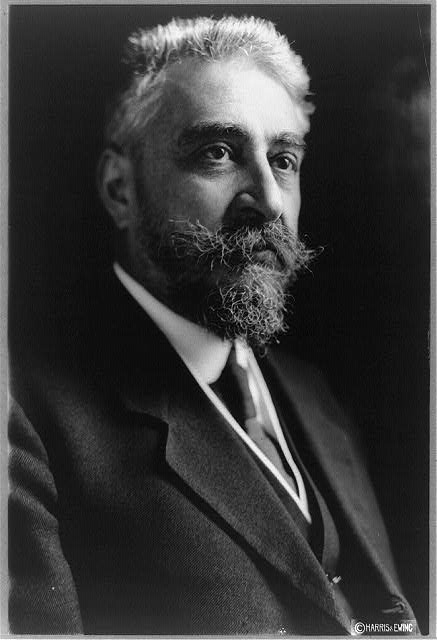
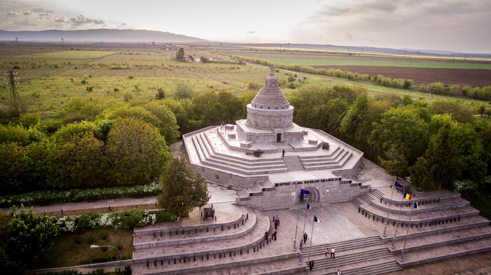
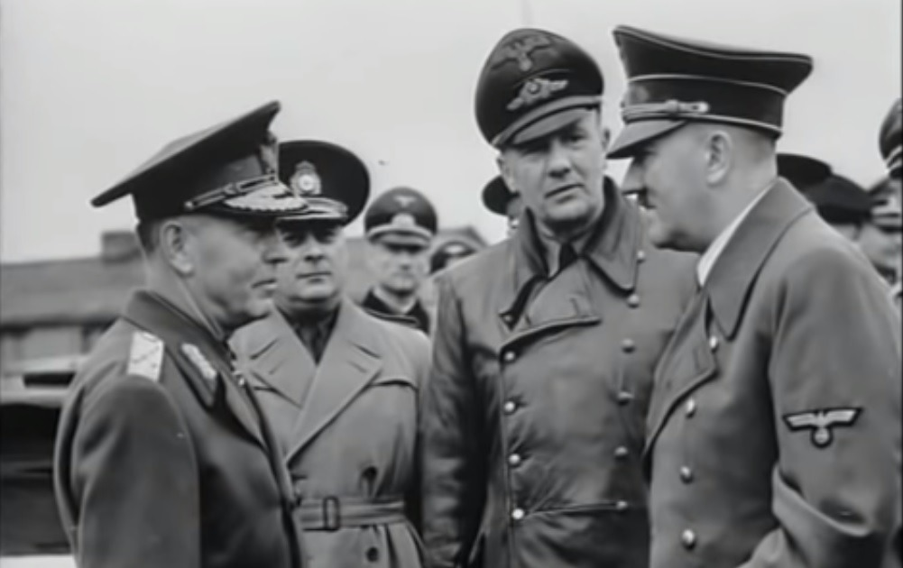
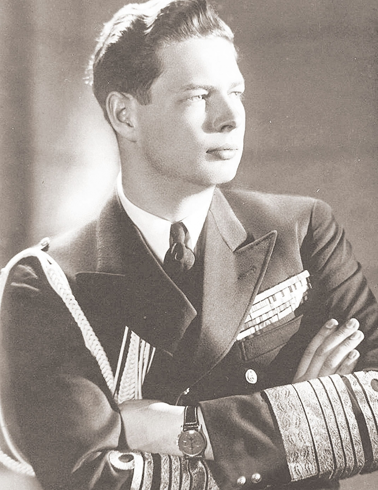
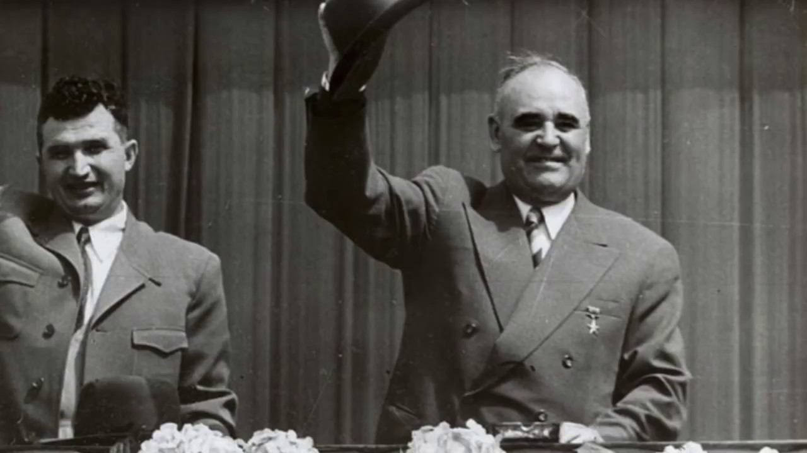
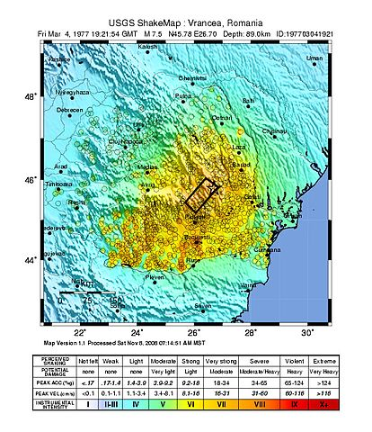
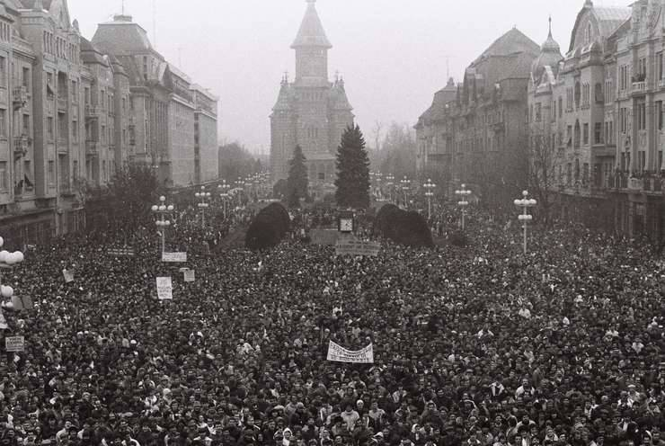
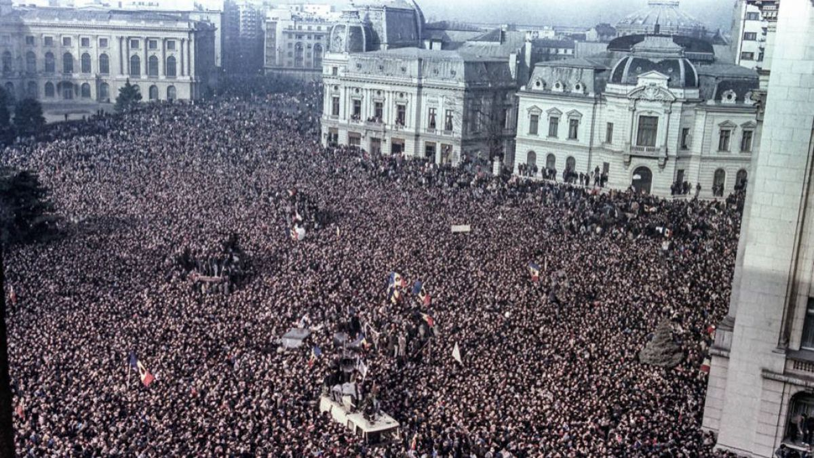
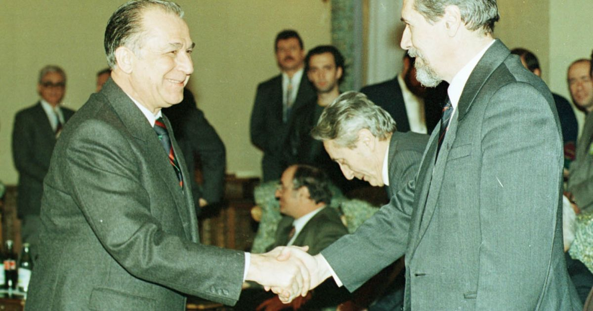

-
1914
Poziția oficială de război a fost stabilită la Consiliul de Coroană de la Sinaia, adoptându-se politica de neutralitate.
-
1915-1916
Prin intermediul lui Brătianu, România aderă la Antanta și declară razboi Germaniei și Austro-Ungariei. Armatele germane și austriece ocupă o porțiune mare din România.
 -
1917
Luptele de la Mărășești.
 -
1918
Sfatul Țării a votat unirea Basarabiei cu România.
-
1922
Ferdinand și Maria sunt încoronați la Alba-Iulia.

-
1927
Regele Ferdinand moare.
-
1930
Carol al II-lea este încoronat. Instaurează un regim autoritar.
-
1940
Forțat de presiunea politică a Uniunii Sovietice, Germaniei hitleriste, Bulgariei și a Ungariei horthyste să cedeze părți din teritoriul României Întregite, Carol a acceptat în consiliul de coroană cedarea teritoriilor și a fost obligat de opoziție să abdice în favoarea administrației pro-germane a generalului Ion Antonescu și în favoarea fiului său Mihai, stabilindu-se în final în Portugalia.
-
1944
Mareșalul Ion Antonescu este arestat la ordinul regelui dupa ce refuză încheierea armistițiului cu Aliații.
 -
1946
Falsificarea alegerilor de câtre PCR.
-
1947
Abdicarea regelui Mihai. Este proclamată Republica Populară Română.
 -
1947-1965
Regimul lui Gheorghe Gheorghiu Dej.
 -
1965
Moare Georghe Gheorghiu-Dej. PMR revine la denumirea initiala de PCR.
-
1965-1989
Regimul lui Nicolae Ceaușescu.

-
1977
Devastator cutremur de pământ
 -
1989
Începutul Revoluției la Timișoara.

Începutul Revoluției la București.

Execuția soțiilor Ceaușescu.
-
1992
Alegerile sunt câștigate de Ion Iliescu și PDSR.
 -
...